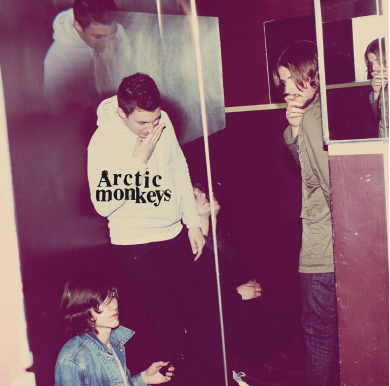

| HOME | ALBOMS | BAND | TOURS |
|

The Car |
„Bardzo drażniło mnie,
kiedy |
Arctic Monkeys to bardzo zróżnicowany zespół. W przeciągu 21 lat
stworzył mnóstwo wspaniałych albumów, każdy zupełnie inny od
pozostałych. Zawdzięczamy to członkom zespołu, którzy nie przejmują się
opinią innych ludzi, eksperymentują i nie boją się tworzyć nowych rzeczy.